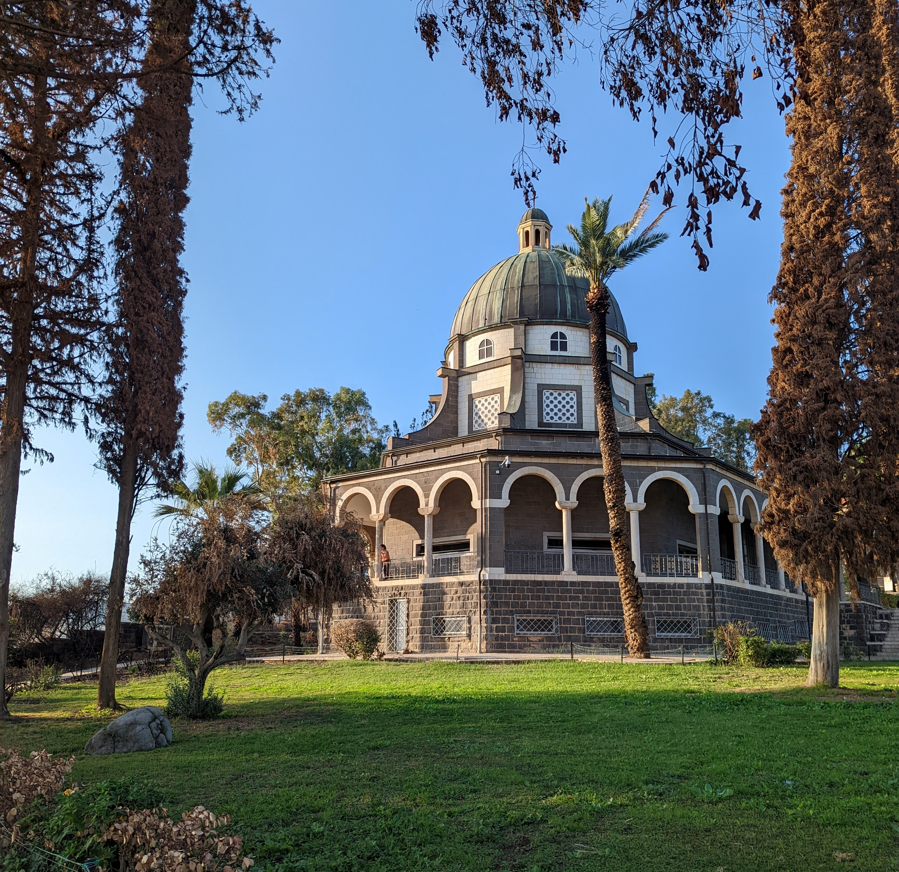
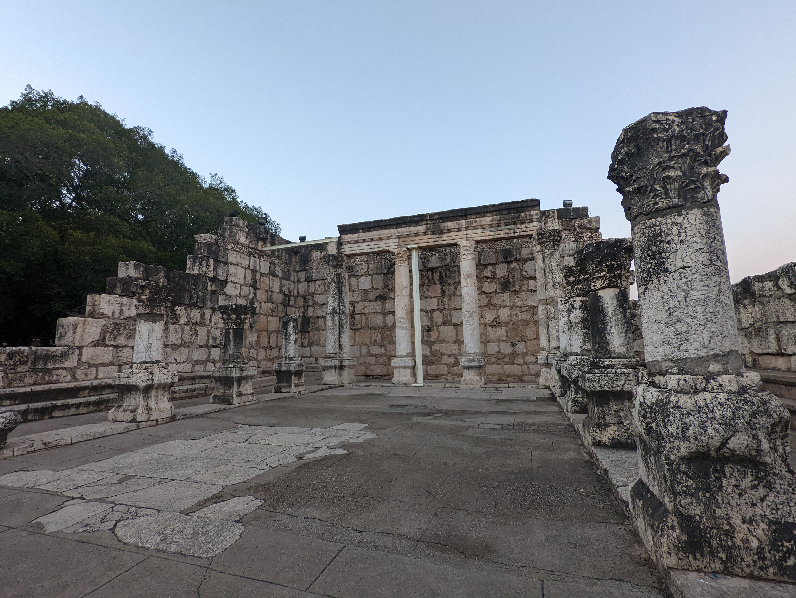
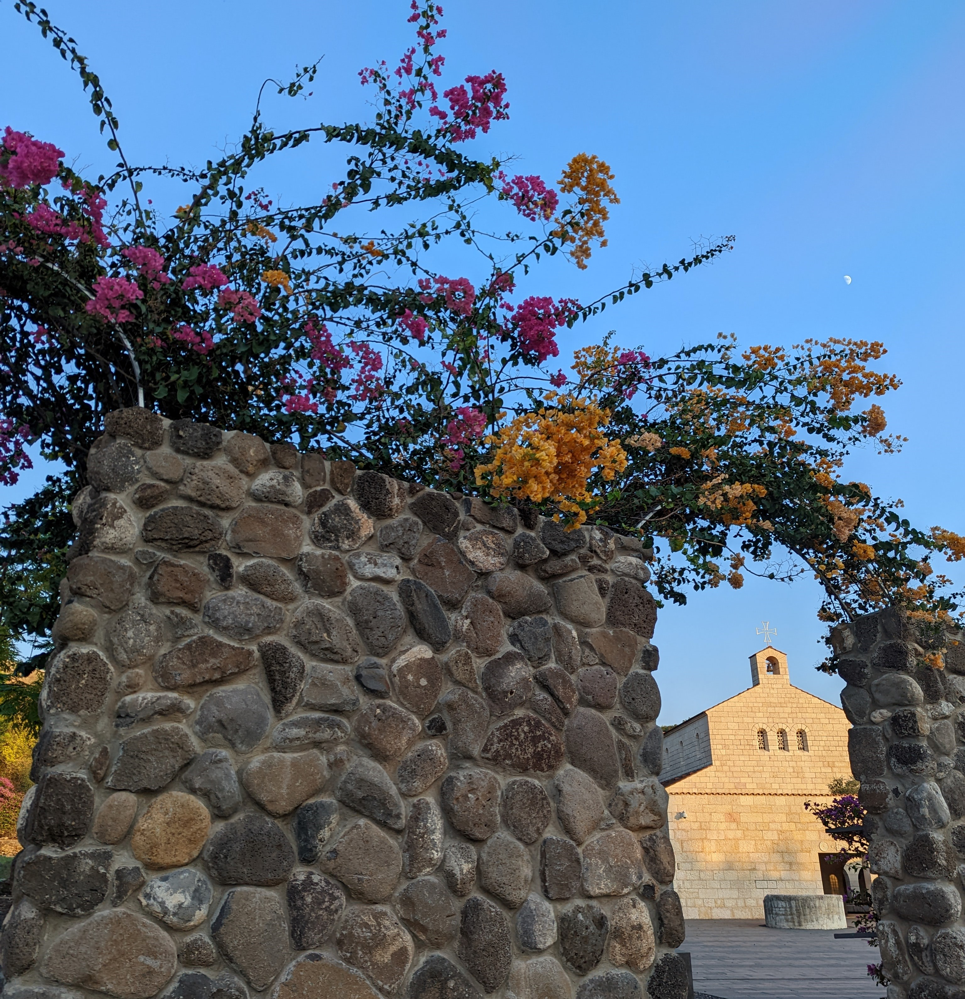

Today was crazy! We woke up before dawn in order to make it through the Jordan-Israel/Palestine border, and went straightaway to the Sea of Galilee. Also known as Lake Tiberias, because technically the Sea of Galilee is fully land-locked and made of fresh water, so it is not actually classified as a Sea.
Our first stop was at the site of an archeological discovery of a 2,000 year old ship. Using this find, they were able to reconstruct the type of ships that would have existed then, and we took a trip out on the water. While we were out on the calm sea, our guide told us that the geography of the region increased the chance of storms forming suddenly and unexpectedly. I had a really neat and spiritual experience as we sang the song, Master, the Tempest is Raging.
Master, the tempest is raging!
The billows are tossing high!
The sky is o’ershadowed with blackness,
No shelter or help is nigh;
Carest Thou not that we perish?
How canst Thou lie asleep,
When each moment so madly is threat’ning
A grave in the angry deep?
The winds and the waves shall obey Thy will, The church at the traditional location of the Sermon on the Mount, also called The Church of the Beatitudes.
Peace, be still!
Whether the wrath of the storm-tossed sea,
Or demons or men, or whatever it be,
No waters can swallow the ship where lies
The Master of ocean, and earth, and skies;
They all shall sweetly obey Thy will,
Peace, be still! Peace, be still!
They all shall sweetly obey Thy will,
Peace, peace, be still!
Next, we visited several locations traditionally commemorating different events in Christ's ministry. This included the Church of Beatitudes, where the Savior gave his "Sermon on the Mount."
 A synagogue where it is likely Christ and his apostles visited often.One of my favorite sites was Capernaum, where the house of Peter is believed to be located (and it's backed by archeological evidence), and I loved imagining Jesus teaching in the synagogue there.
 The church of the Multiplication of the LoavesWe also went to the Church of the Primacy of Peter, the Church of the Multiplication of the Loaves, and Magdala, the hometown of Mary Magdalene.